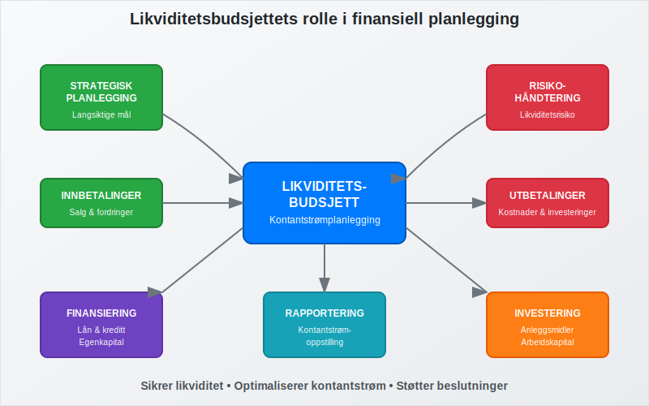
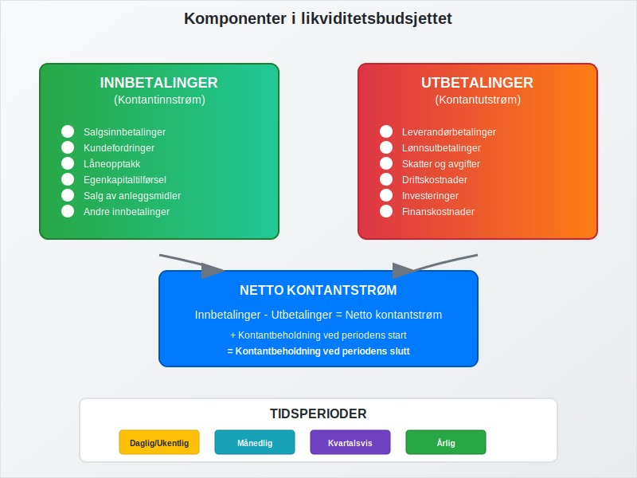
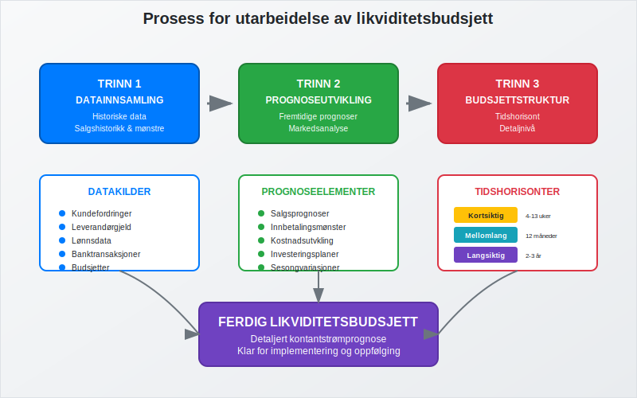
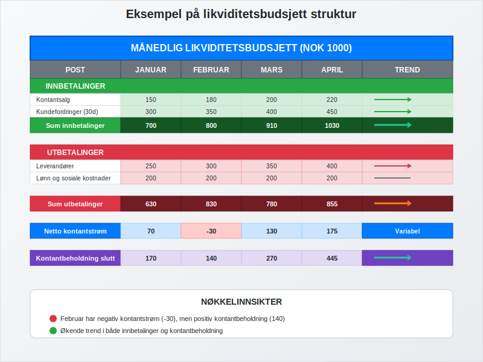
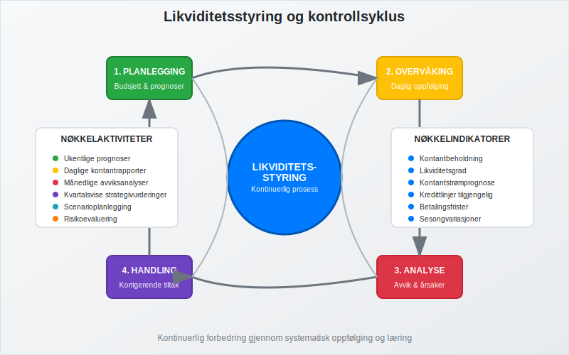
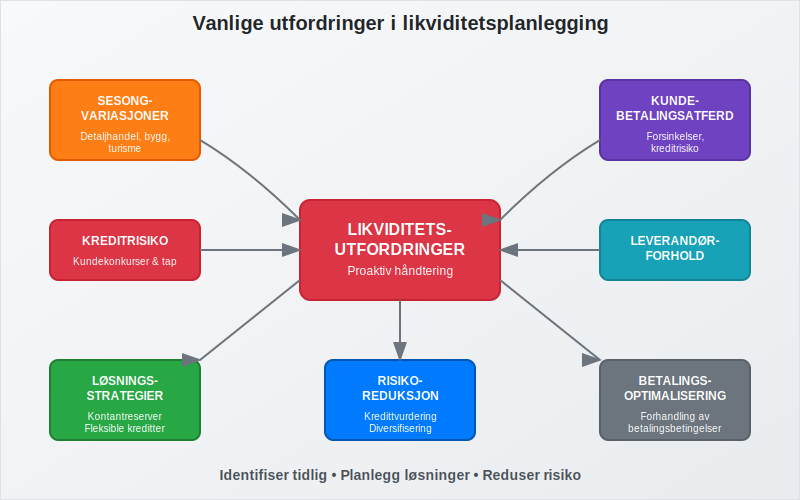
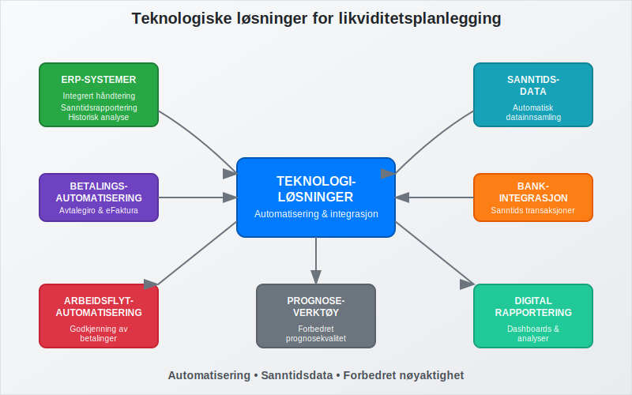
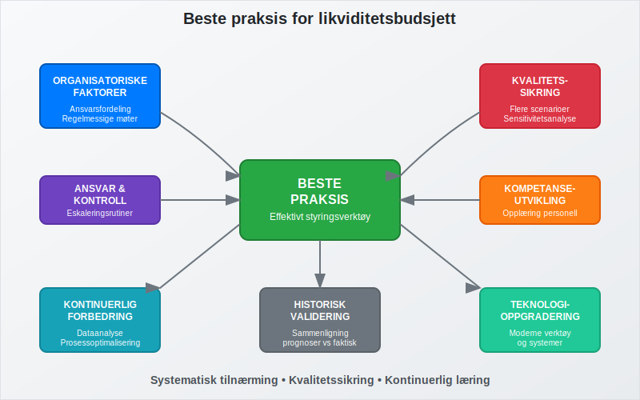
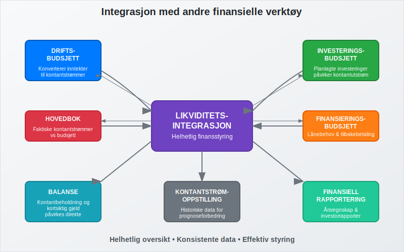

Likviditetsbudsjett er et spesialisert finansielt planleggingsverktøy som fokuserer på å forutsi og styre bedriftens kontantstrømmer over en bestemt periode. Dette budsjettet er kritisk for å sikre at bedriften har tilstrekkelig arbeidskapital til å møte sine løpende forpliktelser og opprettholde god betalingsevne. Likviditetsbudsjettet er en sentral del av budsjettering og arbeider tett sammen med kontantstrømanalyse for å gi ledelsen full oversikt over bedriftens likviditetssituasjon.
For å få oversikt over bedriftens samlede kapitalbehov, se vår artikkel om Kapitalbehov.
Hva er et likviditetsbudsjett?
Et likviditetsbudsjett er en detaljert prognose over alle inn- og utbetalinger som forventes i en fremtidig periode, vanligvis oppdelt på måneds- eller ukebasis. I motsetning til driftsregnskapet som fokuserer på inntekter og kostnader, konsentrerer likviditetsbudsjettet seg utelukkende om faktiske kontantbevegelser.

Hovedformålet med likviditetsbudsjettet er å:
- Sikre tilstrekkelig kontantbeholdning til å møte forpliktelser
- Identifisere perioder med likviditetsutfordringer på forhånd
- Planlegge finansieringsbehov og investeringsmuligheter
- Optimalisere kontantstrøm gjennom bedre timing av inn- og utbetalinger
- Redusere finansieringskostnader ved å unngå unødvendig lånebehov
Komponenter i likviditetsbudsjettet
Et komplett likviditetsbudsjett består av flere hovedkomponenter som sammen gir et helhetlig bilde av bedriftens kontantstrømsituasjon.

Innbetalinger (kontantinnstrøm)
Innbetalingsdelen av budsjettet inkluderer alle forventede kontantinnstrømmer:
- Salgsinnbetalinger: Kontantbetaling fra kunder og innbetaling av kundefordringer
- Låneopptakk: Nye lån og kredittfasiliteter
- Egenkapitaltilførsel: Kapitalinnskudd fra eiere eller investorer
- Salg av anleggsmidler: Kontantinngang fra salg av varige driftsmidler
- Andre innbetalinger: Forsikringsutbetalinger, tilbakebetalinger og diverse inntekter
Utbetalinger (kontantutstrøm)
Utbetalingsdelen omfatter alle planlagte kontantutstrømmer:
- Leverandørbetalinger: Betaling til leverandører og kreditorer
- Lønnsutbetalinger: Lønn, feriepenger, og arbeidsgiveravgift
- Skatter og avgifter: MVA, forskuddsskatt og andre offentlige avgifter
- Driftskostnader: Husleie, forsikring, strøm og andre løpende utgifter
- Investeringer: Kjøp av maskiner, utstyr og andre anleggsmidler
- Finanskostnader: Renteutbetalinger og lånegebyrer
Utarbeidelse av likviditetsbudsjett
Prosessen med å utarbeide et likviditetsbudsjett krever systematisk tilnærming og nøye planlegging for å sikre nøyaktighet og relevans.

Trinn 1: Datainnsamling og analyse
Før utarbeidelse av budsjettet må bedriften samle inn og analysere historiske data:
| Datatype | Kilde | Formål |
|---|---|---|
| Salgshistorikk | Kundefordringer | Estimere innbetalingsmønster |
| Leverandørdata | Leverandørreskontro | Planlegge utbetalinger |
| Lønnsdata | Lønnssystem | Budsjettere personalkostnader |
| Banktransaksjoner | Bankavstemming | Identifisere mønstre |
Trinn 2: Prognoseutvikling
Basert på historiske data og fremtidige planer utvikles prognoser for:
- Salgsprognoser: Estimering av fremtidige salg basert på markedsforhold og konjunktur
- Innbetalingsmønster: Analyse av hvor raskt kunder betaler sine fakturaer
- Kostnadsutvkling: Forventede endringer i kostpris og driftskostnader
- Investeringsplaner: Planlagte kjøp av anleggsmidler og utstyr
Trinn 3: Budsjettstruktur og tidshorisont
Likviditetsbudsjettet struktureres vanligvis som følger:
- Kortsiktig: Ukentlig eller daglig for de nærmeste 4-13 ukene
- Mellomlang sikt: Månedlig for de neste 12 månedene
- Langsiktig: Kvartalsvis for 2-3 år fremover
Praktisk eksempel på likviditetsbudsjett
Her er et forenklet eksempel på hvordan et månedlig likviditetsbudsjett kan se ut:

Månedlig likviditetsbudsjett (NOK 1000)
| Post | Januar | Februar | Mars | April |
|---|---|---|---|---|
| INNBETALINGER | ||||
| Kontantsalg | 150 | 180 | 200 | 220 |
| Kundefordringer (30 dager) | 300 | 350 | 400 | 450 |
| Kundefordringer (60 dager) | 200 | 250 | 280 | 320 |
| Andre innbetalinger | 50 | 20 | 30 | 40 |
| Sum innbetalinger | 700 | 800 | 910 | 1030 |
| UTBETALINGER | ||||
| Leverandører | 250 | 300 | 350 | 400 |
| Lønn og sosiale kostnader | 200 | 200 | 200 | 200 |
| Husleie og drift | 80 | 80 | 80 | 80 |
| Skatter og avgifter | 100 | 50 | 150 | 75 |
| Investeringer | 0 | 200 | 0 | 100 |
| Sum utbetalinger | 630 | 830 | 780 | 855 |
| Netto kontantstrøm | 70 | -30 | 130 | 175 |
| Kontantbeholdning start | 100 | 170 | 140 | 270 |
| Kontantbeholdning slutt | 170 | 140 | 270 | 445 |
Dette eksemplet viser hvordan bedriften kan identifisere at februar vil ha negativ kontantstrøm, men at den samlede kontantbeholdningen fortsatt er positiv.
Likviditetsstyring og oppfølging
Effektiv likviditetsstyring krever kontinuerlig oppfølging og justering av budsjettet basert på faktiske resultater og endrede forutsetninger.

Daglig likviditetsoppfølging
For bedrifter med stram likviditet er daglig oppfølging kritisk:
- Kontantposisjon: Daglig avstemming av bankinnskudd
- Forventede innbetalinger: Oppfølging av forfallne kundefordringer
- Planlagte utbetalinger: Kontroll av betalingsforpliktelser
- Kredittfasiliteter: Overvåking av tilgjengelig kreditt
Ukentlig og månedlig analyse
- Avviksanalyse: Sammenligning av faktiske tall mot budsjett
- Rullende prognoser: Oppdatering av fremtidige perioder
- Scenarioanalyse: Vurdering av best-case og worst-case scenarioer
- Handlingsplaner: Tiltak for å håndtere identifiserte utfordringer
Utfordringer og løsninger i likviditetsplanlegging
Likviditetsplanlegging innebærer flere utfordringer som bedrifter må håndtere proaktivt for å opprettholde god finansiell helse.

Sesongvariasjoner og sykliske svingninger
Mange bedrifter opplever betydelige sesongvariasjoner i kontantstrømmen:
- Detaljhandel: Høy aktivitet i desember, lav i januar-februar
- Byggebransjen: Redusert aktivitet i vintermånedene
- Turisme: Sesongavhengige inntekter
Løsningsstrategier:
- Oppbygging av kontantreserver i gode perioder
- Fleksible kredittfasiliteter for å håndtere svingninger
- Diversifisering av inntektskilder
- Planlegging av investeringer i lavsesongen
Kundebetalingsatferd og kreditrisiko
Forsinket betaling fra kunder er en av de største utfordringene for likviditetsstyring:
| Utfordring | Påvirkning | Løsning |
|---|---|---|
| Lange betalingsfrister | Redusert kontantstrøm | Kortere kredittid, kontantrabatter |
| Betalingsforsinkelser | Uforutsigbar innbetaling | Aktiv inkasso, kredittvurdering |
| Kundekonkurser | Tap av fordringer | Kreditforsikring, diversifisering |
| Valutasvingninger | Usikre innbetalinger | Valutasikring, fakturering i NOK |
Leverandørforhold og betalingsbetingelser
Optimalisering av leverandørbetalinger kan forbedre likviditeten betydelig:
- Forhandling av betalingsbetingelser: Forlengelse av kredittid fra 30 til 45-60 dager
- Utnyttelse av kontantrabatter: Vurdering av lønnsomhet ved tidlig betaling
- Leverandørfinansiering: Bruk av factoring eller andre finansieringsformer
Teknologi og verktøy for likviditetsplanlegging
Moderne teknologi har revolusjonert måten bedrifter håndterer likviditetsplanlegging på, med automatiserte systemer som gir sanntidsdata og forbedrede prognoser.

ERP-systemer og integrasjon
ERP-systemer gir integrert håndtering av likviditetsplanlegging:
- Automatisk datainnsamling fra salg, innkjøp og regnskap
- Sanntidsrapportering av kontantposisjon og prognoser
- Integrerte arbeidsflyter for godkjenning av betalinger
- Historisk analyse for forbedring av prognosekvalitet
Automatisering av betalingsprosesser
- Avtalegiro: Forutsigbare innbetalinger fra kunder
- eFaktura: Raskere fakturaprosessering og betaling
- Automatiske leverandørbetalinger: Optimalisering av utbetalingstiming
- Banktransaksjoner i sanntid: Umiddelbar oppdatering av kontantposisjon
Regulatoriske krav og compliance
Likviditetsplanlegging må også ta hensyn til ulike regulatoriske krav og rapporteringsforpliktelser som påvirker kontantstrømmen.
Skatter og avgifter
Systematisk planlegging av skatte- og avgiftsbetalinger er kritisk:
- MVA-terminer: Månedlige eller toårige innbetalinger avhengig av omsetning
- Forskuddsskatt: Kvartalsvise innbetalinger basert på forventet resultat
- Arbeidsgiveravgift: Månedlige innbetalinger sammen med A-melding
- Særskilte avgifter: Bransjespecifikke avgifter og gebyrer
Rapportering og dokumentasjon
- Årsregnskap: Likviditetsbudsjettet støtter utarbeidelse av kontantstrømoppstilling
- Kredittrapportering: Banker krever ofte likviditetsbudsjetter ved lånesøknader
- Investorrapportering: Regelmessig rapportering til eiere og investorer
Beste praksis for likviditetsbudsjett
Implementering av beste praksis sikrer at likviditetsbudsjettet blir et effektivt styringsverktøy som bidrar til bedriftens finansielle stabilitet og vekst.

Organisatoriske faktorer
- Tydelig ansvarsfordeling: Definerte roller for utarbeidelse, godkjenning og oppfølging
- Regelmessige møter: Ukentlige eller månedlige gjennomganger av likviditetsstatus
- Eskaleringsrutiner: Klare prosedyrer når likviditeten blir kritisk
- Kompetanseutvikling: Opplæring av nøkkelpersonell i likviditetsstyring
Kvalitetssikring og kontroll
- Flere scenarioer: Utarbeidelse av optimistiske, realistiske og pessimistiske prognoser
- Sensitivitetsanalyse: Vurdering av hvordan endringer i nøkkelvariabler påvirker likviditeten
- Historisk validering: Sammenligning av prognoser med faktiske utfall for å forbedre nøyaktighet
- Uavhengig gjennomgang: Ekstern validering av forutsetninger og metoder
Kontinuerlig forbedring
- Dataanalyse: Bruk av historiske data til å identifisere mønstre og trender
- Prosessoptimalisering: Kontinuerlig forbedring av prognosemetoder og -verktøy
- Benchmarking: Sammenligning med bransjestandard og beste praksis
- Teknologioppgradering: Investering i moderne verktøy og systemer
Sammenheng med andre finansielle verktøy
Likviditetsbudsjettet fungerer ikke isolert, men er en integrert del av bedriftens samlede finansielle planlegging og styring.

Forhold til andre budsjetter
- Driftsbudsjett: Likviditetsbudsjettet konverterer driftsinntekter og -kostnader til kontantstrømmer
- Investeringsbudsjett: Planlagte investeringer påvirker kontantutstrøm og fremtidig avskrivning
- Finansieringsbudsjett: Koordinering av lånebehov og tilbakebetalinger
Regnskapsintegrasjon
- Hovedbok: Faktiske kontantstrømmer registreres og sammenlignes med budsjett
- Balanse: Kontantbeholdning og kortsiktig gjeld påvirkes direkte
- Kontantstrømoppstilling: Historiske data brukes til å validere og forbedre prognoser
Konklusjon
Likviditetsbudsjett er et uunnværlig verktøy for moderne bedriftsledelse som sikrer finansiell stabilitet og støtter strategisk beslutningstaking. Gjennom systematisk planlegging av kontantstrømmer kan bedrifter:
- Unngå likviditetskriser ved å identifisere potensielle problemer på forhånd
- Optimalisere finansieringskostnader gjennom bedre timing av lån og investeringer
- Forbedre forhandlingsposisjon med banker, leverandører og kunder
- Støtte vekststrategier ved å sikre tilstrekkelig finansiering for ekspansjon
Suksessfull implementering krever kombinasjon av riktige verktøy, kompetent personell og systematiske prosesser. Med økende digitalisering og automatisering blir likviditetsplanlegging stadig mer sofistikert og nøyaktig, noe som gir bedrifter bedre grunnlag for å ta informerte finansielle beslutninger.
For bedrifter som ønsker å styrke sin finansielle posisjon og sikre langsiktig bærekraft, er investering i profesjonell likviditetsplanlegging en av de mest verdifulle tiltakene de kan gjennomføre.